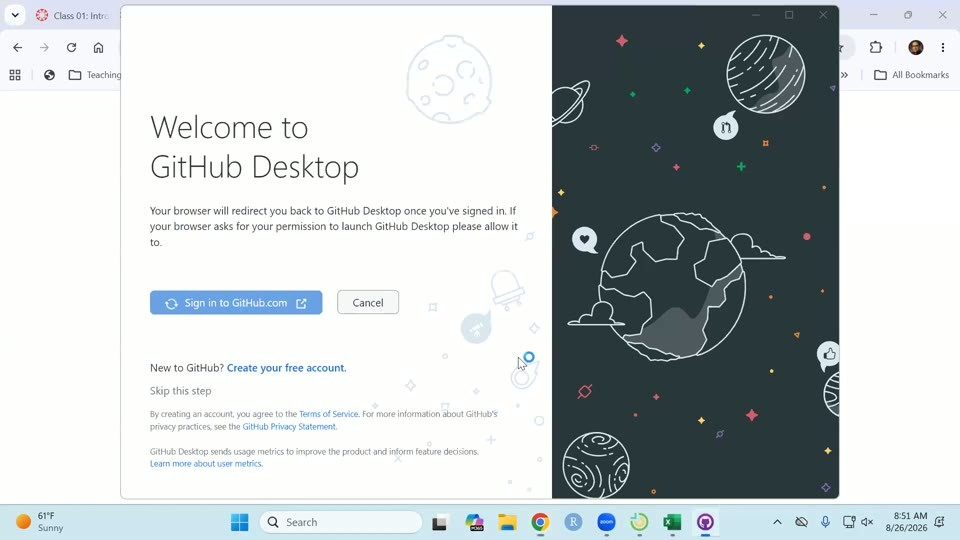
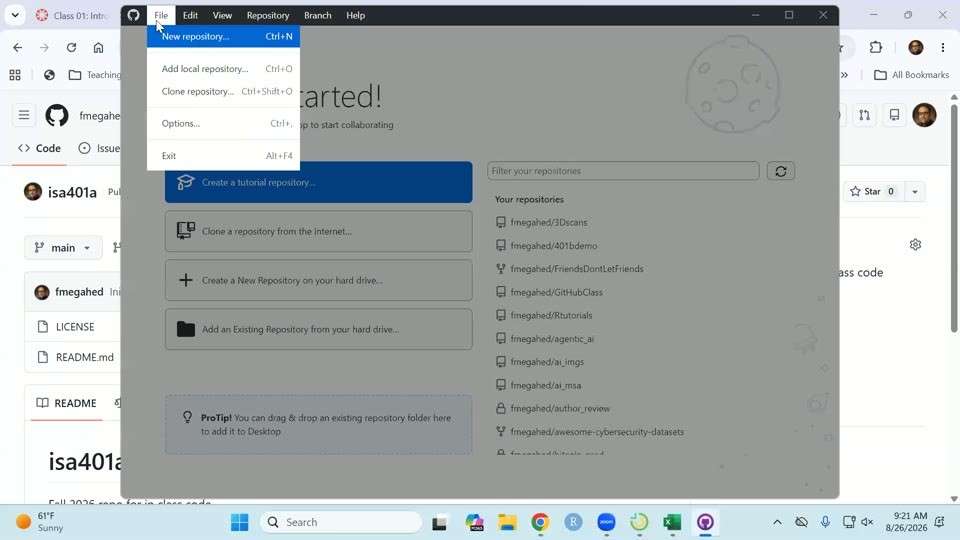
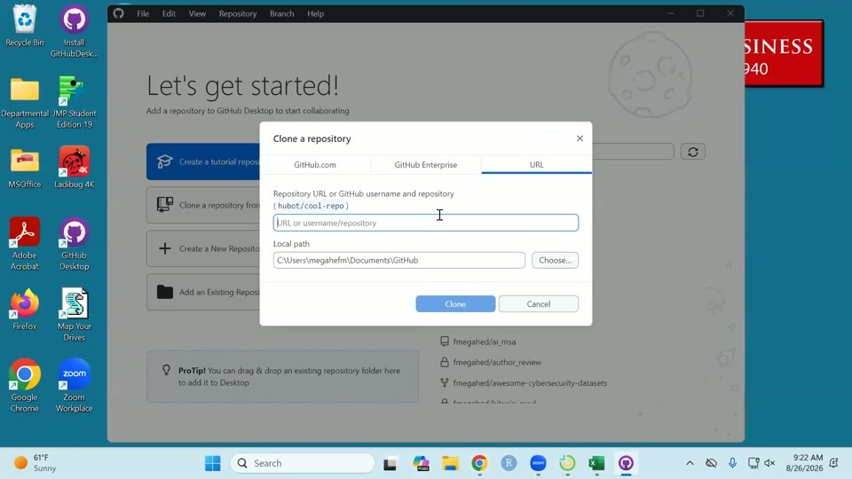

02: Git Foundations + Reproducibility
ISA 401: Business Intelligence & Data Visualization
The recording is on Canvas, available to ISA 401 instructors. Timestamps before each paragraph are hh:mm:ss into the recording; drag the player there to hear the passage.
Timeline
| Start | End | Min | Segment |
|---|---|---|---|
| 00:00:00 | 00:14:48 | 15 | Class 01 deck finished: analytics journey, three shapes of data, unit of analysis, encoding |
| 00:14:48 | 00:18:54 | 4 | Live Excel detour on 3D bars, then the Class 01 terminology recap |
| 00:18:54 | 00:24:34 | 6 | Setup block: Zoom sign-in, GitHub Desktop install, sign-in, Git config, work time |
| 00:24:34 | 00:27:49 | 3 | Demo repository created live; why Git is on the syllabus; the four goals for the day |
| 00:27:49 | 00:34:19 | 7 | Part 1, why scripts: spreadsheet failures, the same chart two ways, code is just text |
| 00:34:19 | 00:39:42 | 5 | Git in open ISA job postings; what an AI coding agent does with Git |
| 00:39:42 | 00:48:31 | 9 | Git versus GitHub, then the six Git words |
| 00:48:31 | 00:50:38 | 2 | What Assignment 0 already did, and what cloning adds |
| 00:50:38 | 01:00:56 | 10 | Live demo: clone, edit the README, commit, push, fix on the web, fetch and pull |
| 01:00:56 | 01:04:16 | 3 | Question from the room; the whole cycle replayed one step at a time |
| 01:04:16 | 01:14:24 | 10 | ChatISA career portfolio built and published live; Assignment 02 spelled out |
| 01:14:24 | 01:17:29 | 3 | Text versus binary files, taken quickly; undo and revert |
| 01:17:29 | 01:19:23 | 2 | Deadlines moved to Wednesday, next class previewed, closing remarks |
The rounded minutes sum to 79 and the rows run end to end across a recording of 1:19:23. Against the deck the order held, but the front was far heavier than planned: the refresher is a single slide the deck’s own notes expect to take thirty seconds if the answers come fast, and instead the first nineteen minutes went to finishing the Class 01 deck.
Where students struggled
00:24:09 Someone in the room could not sign in during the setup timer, having forgotten a password. Account recovery means waiting, so there was nothing to fix in the moment. Fadel said he never remembers his either, asked whether anyone else had a password problem, checked that the room was on Zoom with GitHub Desktop ready, and moved on.
00:57:59 The edited README did not render as intended once it was on github.com: the two hash signs did not come out as a heading, and the file had picked up a stray backslash and extra spaces from Notepad. Fadel had said a moment earlier that Notepad does weird things and that he prefers Sublime as a text editor. He treated the mess as a good experience rather than a failure, fixed it in GitHub’s web editor, and used the fix as the way into fetch and pull. Anyone following along in Notepad will hit the same thing.
01:00:56 The push step did not land on the first pass. A student asked about the line added to the README and said the push was not clear. Two things had gone by without being named: the Markdown syntax in the file, and the difference between a commit, which is local, and a push, which is what puts the change on github.com. Fadel replayed the whole cycle slowly on a fresh example, adding a line for RStudio, and showed the README on github.com still missing that line after the commit. Pushing and then refreshing the page was what made the distinction visible.
Questions from the room
01:00:56 A student asked about the added line in the README and said the push step was not clear. The answer went one step at a time: two hash signs in Markdown make a second-level header, which had not been explained, and the bullets were written as dashes, though asterisks would also work; saving the file makes GitHub Desktop notice a change; the tick next to the file is the staging step and happens by default; committing records a snapshot that lives only on the computer; and pushing is what sends it to github.com. Refreshing the page after the push showed the new line.
01:04:16 Fadel asked the room whether the career fair was two weeks away, then settled on about ten days.
01:06:43 Asked what the end project in ISA 104 had been, someone pointed out they had not taken 104. Fadel rephrased the question for the room as any class where code was used to build something, and said to upload that as the portfolio example, the code rather than the data, since the data may be a privacy issue.
Demo notes and gotchas
00:14:48 The 3D bar chart demonstration was done live in Excel rather than from a slide. Fadel opened a blank workbook, typed four categories with the values 10, 4, 8 and 16, and inserted a 3D bar chart, saying he does not use Excel often and taking a moment to find the chart type. The point is that the perspective in a 3D bar makes every value read low, and that the same data in the same software as a plain 2D bar reads correctly. It sits inside the Class 01 material on the two data-visualization agendas Fadel says are not hidden: no 3D charts, and a second one the recording does not carry clearly, most likely pie charts.
00:19:01 The setup block was framed as two tasks, or four depending on how you count, and Fadel gave the room about two minutes for all of them, with an offer of more. Zoom is installed on the lab machines but not connected to student accounts, and the Zoom link now lives in the Week 0 module on Canvas. His reason for insisting on it: with everyone on Zoom, a student who hits an error can share a screen, which is more useful for the whole room than talking to three people separately about the same error, and it lets the class watch how errors get approached.
00:19:56 The install path that worked: type “GitHub Desktop” into the Windows search bar and run the installer, which reports that it is installing and opens by itself. Fadel suggested pinning it to the taskbar, then signing in to github.com with the Assignment 0 account.

00:21:00 The browser opens an “Authorize GitHub Desktop” page; picking the account and clicking Continue hands control back to Desktop, which then asks which account name and email address to attach to commits. Fadel kept the name and email he uses on GitHub and clicked Finish. Those are the three steps inside Desktop, install, sign in, and configure Git, with the Zoom sign-in as the fourth task.
00:24:35 Fadel had not done Assignment 0 himself, so he filled in GitHub’s new-repository form on screen, purely so that he had something to follow along with. It is called isa401a, not business_intelligence, so the repository name on screen does not match what students see in their own accounts for the rest of the session. He said students should have added a README, that a license is not required but can be added, and that he typically uses the MIT license; the clone later showed both a LICENSE file and a README in the repository.
The code on the reproducibility slides
00:30:21 No R was run live. Both blocks below are the deck’s, read aloud line by line as the answer to what the six spreadsheet steps look like in a script. His framing was that the code itself is not the point and being able to read it is: someone with a terrible memory can redo a thing in Excel, but explaining it four weeks later means going back through every single function. The markers follow the lines he named.
#| eval: false
1crashes = readr::read_csv("data/cincy_2025_crashes.csv") |>
dplyr::mutate(
2 datetime = lubridate::ymd_hms(crashdate),
3 weekday = lubridate::wday(datetime, label = TRUE)
) |>
4 dplyr::distinct(instanceid, .keep_all = TRUE)
crashes |>
5 dplyr::count(group = weekday) |>
ggplot2::ggplot(
ggplot2::aes(x = n, y = forcats::fct_rev(group))
) +
6 ggplot2::geom_col(fill = "#C3142D") +
ggplot2::labs(x = "Crashes", y = NULL,
title = "Cincinnati crashes in 2025")- 1
- Read the data in.
- 2
- Turn the crash date into a datetime in R.
- 3
- Extract the weekday from that datetime.
- 4
-
Keep the unique values of
instanceid. - 5
- Count.
- 6
- Plot.
00:31:44 For a different span of dates, Fadel’s point was that only the input changes, where in Excel the whole thing is redone or a macro is written and copied over. The deck makes that concrete by switching a panel: one highlighted line changes, grouping by month instead of by weekday, and a different chart comes out.
#| eval: false
crashes |>
dplyr::count(group = month) |>
ggplot2::ggplot(
ggplot2::aes(x = n, y = forcats::fct_rev(group))
) +
ggplot2::geom_col(fill = "#C3142D") +
ggplot2::geom_text(
ggplot2::aes(label = scales::comma(n)),
hjust = -0.15, size = 3
) +
ggplot2::scale_x_continuous(
expand = ggplot2::expansion(mult = c(0, 0.18))
) +
ggplot2::labs(x = "Crashes", y = NULL,
title = "Cincinnati crashes in 2025")00:34:50 The job-market chart and table on the Git slide are computed from scout.db when the deck renders, so the numbers move. In this session the data had been refreshed with the previous Sunday’s postings and stood at about 1,900 jobs, against the 1,400 quoted in Class 01, with roughly 8% of all postings mentioning version control, about 22% among postings asking for Python or R, and 38% on the third bar for data and analytics engineering roles. His way of putting the gradient was that version control is about 3.5 to 3.75 times more common in a technical posting than in a non-technical one, and that the engineering-type roles, where you are building data pipelines, run higher still and typically pay a little more.
00:36:32 He then opened the first row of the table, the Apple posting, live in the browser, and read the responsibilities off it: organizing code in GitHub, SQL, Tableau, and manipulating data in Python or R. He noted it asks for about three years of experience, so it is probably better suited to MSBA students, and said he believes Apple always posts pay.
00:42:52 The six Git words took about six minutes, most of it on one analogy. Fadel explained a commit as Google Docs version history, with a two-author example and a show of hands on whether anyone had ever opened that history, and he introduced staging here in words and then demonstrated it much later, on the second pass through the demo.
00:51:04 In GitHub Desktop’s File menu, three entries look alike, and Fadel separated them before clicking. New repository creates a new folder on the computer. Add local repository is for a folder that already exists and is already Git-backed. Clone repository is the one that brings a repository down from GitHub, and that is what the demo used.

00:51:40 Typing the repository name into the GitHub.com tab of the Clone dialog did not turn it up, which cost about half a minute on screen. The way through was the URL tab: copy the whole address from the browser, the username fmegahed and then the repository name, and paste it there.

00:52:06 For the local path Fadel assumed the M drive, so that the folder is also reachable from the VM: choose a different path, navigate to the M drive, click Select Folder. There was no isa401a folder there yet, so cloning created one. Before clicking Clone he said what should arrive in it: the LICENSE file, README.md, and the Git tracking piece.
00:53:42 Two things are worth pointing out once the clone lands. At the file level the color coding is green for a new file, red for a deleted one, and mustard yellow or orange for an edited one. For text-like files, R, Python, RMD, Python notebooks, CSV, Markdown, Desktop also shows the change line by line; here nothing had existed before, so every line counts as an addition: the header on the initial commit reads +23 across the two files, and the 21 lines Fadel read out is the count for the LICENSE file on its own.
00:55:22 The edit was made by opening README.md in Notepad, adding a short Tools section listing Git, GitHub and R, and saving; Fadel said R would have done as well. Back in Desktop the file turns orange. His commit summary said in plain words that the tools used in class had been added, and he noted that a collaborator’s GitHub handle can be added to a commit so that two people are credited for the change.
00:57:17 Committing created the second snapshot, and that snapshot lives only in the local folder; the history then shows the first commit with its two files and the second as a modification. Push is the separate step that puts it on github.com.
00:58:28 The render fix was made on github.com: click edit, delete the stray backslash and the extra spaces, then use the preview to check. GitHub’s editor proposes a commit message with AI, which Fadel replaced with one naming what he had actually done. Worth saying out loud, as he did: committing in the web interface commits and pushes in one step.
00:59:36 Back in Desktop, Fetch compares local against online and showed the web edit missing locally; Pull brought it down. The whitespace-only diff is hard to read afterwards, which is better flagged than left to puzzle the room.
01:04:43 The portfolio builder is the Career portfolio option on ChatISA, at chatisa.fsb.miamioh.edu/portfolio. It starts from a resume, which students may have to dig out of email; Fadel believed it has to be a PDF but said he was not certain. The resume text goes to an LLM that pulls out education and major, then there is a course picker, with 125, 225, 235, 345 and 401 as the minimum, then project uploads, which can be added without a title. He told the room to upload code rather than data, since the data may be a privacy issue, and pointed at the builder’s privacy defaults: a file called resume is not uploaded, and a data file is not uploaded either. He also advised against publishing a resume at all, since the phone number and address go online with it.
01:06:15 One caution for a successor running this on a machine that has run it before. Fadel’s browser still held a project from his ISA 381 demo on the Monday, and his ChatISA account already showed as connected to GitHub, so the room never saw the normal connect step. For a student the builder will ask to connect, and the browser has to be signed in to GitHub, Chrome if Chrome is what is in use.
01:08:21 Generate my site is the button, and before publishing the builder offers a chance to edit the generated text; Fadel changed the headline on the spot to show that. The page it produced carried a link to the project, skills extracted from that project, a history taken from the CV, and the two universities from his own resume, which he confirmed were right.
01:09:54 The publish step stalled twice. Naming the repository first produced a connection error, cleared by disconnecting and connecting again. The builder then refused to overwrite the repository that already existed on his account and asked for a different name, which became “Portfolio 2”. He had said in advance that he had never tried generating for an account that already had a portfolio, that an error was possible, and that for students without one it should work. Publishing then reported the site live, taking a couple of minutes to render.
01:11:06 The published page is a single HTML file written out as essentially one long line. Untangling it is the first of the at least three commits Assignment 02 asks for, and Fadel said he would show how to do that in R so the code can be copied. The other two are a change to the text and moving a section, since the generated order puts education last and skills second.
01:14:24 Text versus binary was taken quickly and on purpose. The line kept was that Git can report that a PDF, image, Word document, PowerPoint or Excel file changed but cannot show what changed inside it, while for a CSV, an HTML file, an R file or a Python file it can, down to the single value the slide’s example changes.
01:15:50 The undo and revert demonstration, in click order: right-click the commit in History, choose Revert changes in commit, which does not delete the commit but takes the files back to the state before it, leaving a new change ready to push. The alternative is to undo the commit, and the pending change can then be discarded permanently from the right-click menu. Afterwards the history still showed the original commit, which was the point.
For next time
01:17:46 With three minutes left Fadel pushed the Assignment 02 and 03 deadlines to Wednesday, saying he did not want to rush; this supersedes the Monday date he named during the portfolio demo. He said the next class would be R projects in RStudio, and the specific folders to create inside the business_intelligence folder, so that his file paths and the students’ match, which is what avoids the file-path trouble students hit in other courses.
00:09:03 On the Top Skills chart Fadel remarked that this section had probably rushed the example and that he did not think he had in the other section, then walked it through again.
00:24:35 He said he had not done Assignment 0 himself and was a little bit behind, and made the demo repository on the spot so that he had something to follow along with.
01:05:39 On the portfolio builder he said he probably should have extracted the GPA from the resume, that he had not made the generated HTML pretty when he built it, and that he had not put a lot of thought into the order of the generated sections.
01:14:11 On always having something to showcase: “This is something I’m going to try to do, and if I move away from that in the middle of semester, keep me honest.”
01:18:14 And for anyone who had not had him before, he said he does not care which slide he ends on and loves questions from the room, and that sharing a screen is genuinely wanted rather than a way of putting anyone on the spot, because that is how debugging gets learned.
Suggestion: create the demo repository before class, and give it the name the students use. Making it live cost about a minute, and for the rest of the session the repository on screen was isa401a while the students’ is business_intelligence.
Suggestion: open the README in an editor that leaves Markdown alone. The Notepad artifacts earned one good teaching moment about fixing things as you go, but they also produced a whitespace diff that could not be read afterwards.
Suggestion: decide in advance how much of the Class 01 deck to carry over. Nineteen of the seventy-nine minutes went to it, which is about what the recap slide, the two polls, and the NotebookLM slide would have taken.
Suggestion: at the clone step, go to the URL tab first. The deck’s own fallback card already lists pasting the URL as the fix when a repository is not listed, and the search that failed on screen is exactly that case.
Suggestion: run the portfolio build from an account with no existing portfolio, or narrate the rename path deliberately, since the room saw the failure branch rather than the one they will get.
Open: at 00:11:59, the second data-visualization habit Fadel says he pushes all semester; read here as pie charts, pending confirmation.
Open: at 00:25:47, the older tool Fadel named alongside Git when he said that ten years ago there were two and now most people use Git; read here as SVN. Nothing in these notes rests on it.
Open: at 00:40:56, the two other providers Fadel named as places a repository can be pushed to besides GitHub; read here as Bitbucket and GitLab.
Open: whether the two Mentimeter polls were skipped for time, so that a successor knows they were planned and not run.
Open: whether the R projects work and the folder structure promised for the next class land in the Class 03 notes.
Materials
- Slides
- Recording on Canvas, available to ISA 401 instructors.